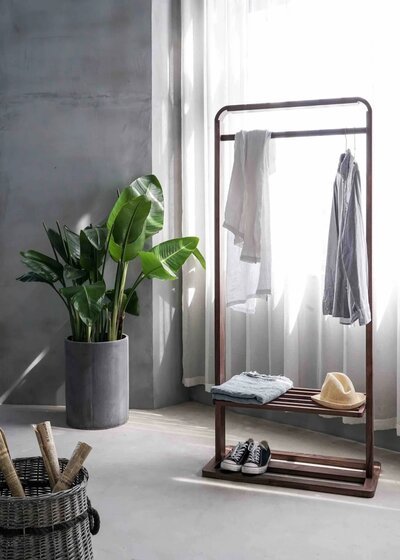

Abarca una conciencia y un enfoque de la moda que tiene en cuenta los procesos y los recursos necesarios para fabricar la ropa. Aboga por la compra de prendas de mejor calidad que duren más tiempo, y valora el trato justo de las personas, los animales y el planeta a lo largo del proceso. La slow fashion y la moda sostenible o ética tienen muchas similitudes. Son movimientos hermanos y siguen las mismas directrices generales. La principal diferencia con la slow fashion es que se centra en reducir el consumo y la producción de forma más específica.
Que es Slow Fashion?
Los inicios de la slow fashion
En la última década se ha producido una oleada de cambios en la industria de la moda. Cada vez son más las marcas que rechazan los principios de la moda rápida y optan por un enfoque más sostenible en la confección de prendas.La slow fashion se opone al modelo de moda rápida que surgió hace unos 20 años, en el que la ropa se abarató y los ciclos de las tendencias se aceleraron. Algunas marcas muy conocidas queman muchas toneladas de prendas no vendidas al año, a pesar de los continuos esfuerzos de sostenibilidad para cerrar el círculo de la moda, está claro que esta filosofía es una parte necesaria del movimiento en su conjunto.
Caracteristicas el movimiento Slow Fashion
- Se fabrica con materiales sostenibles de alta calidad, como el lino o el algodón ecológico
- Las prendas son más atemporales que modernas
- Suelen venderse en pequeñas tiendas (locales) en lugar de en grandes cadenas.
- Prendas de origen, producción y venta local
- Pocos estilos específicos por colección, que se lanzan dos o máximo tres veces al año, o una colección permanente sin temporada
- A menudo se fabrican por encargo para reducir la producción innecesario
- Se respetan los derechos de sus empleados y productores, a través de salarios y condiciones de trabajo justas.

Cuando reutilizamos ropa, estamos aprovechando al máximo los recursos con los que esta fue fabricada. Esto, además, te permite incorporar prendas vintage originales y atemporales dando un toque de estilo a tu imagen.